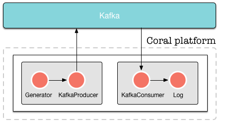

This is a complete example how to start the platform, create a pipeline that writes data to Kafka, create another pipeline that reads data from Kafka and writes text to a file.
In this tutorial, we will create the following setup:

We put data on Kafka ourselves so we can read from it in the second pipeline. Obviously, this example is a bit contrived, but it demonstrates how to read and write from Kafka in the format we need.
As before, we assume that you have downloaded and extracted the Coral platform on your machine, and that Cassandra is running. In this tutorial, we assume that you use the latest version of the Coral platform. We will also assume that you use curl to send commands to Coral. As stated in the section Prerequisites, however, you can use any HTTP client you want.
To get Kafka running on your machine, download it here. Download the latest version in .tar.gz format and extract it into a folder on your machine. Assuming you have downloaded version 0.9.0.0, execute the following commands:
tar -xzf kafka_2.11-0.9.0.0.tgz
cd kafka_2.11-0.9.0.0
bin/zookeeper-server-start.sh config/zookeeper.properties
bin/kafka-server-start.sh config/server.properties
bin/kafka-topics.sh --create --zookeeper localhost:2181 --replication-factor 1 --partitions 1 --topic testWe now have a Kafka topic “test” running which can be written to at localhost:2181.
We will assume that you have created a user “neo” as in the previous “Hello, world” example.
To start the platform, enter the following command:
java -cp "coral-runtime-0.0.131.jar" \
io.coral.api.Boot start \
-ai "0.0.0.0" -p 8000 -ah "127.0.0.1" \
-ap 2551 -am "coral" -ccp "192.168.100.101" \
-cp 9042 -k "coral" -nc -ll INFO
To test whether the platform runs correctly, issue the following command:
curl -H "Content-Type: application/json" \
-H "Accept: application/json" \
--request GET \
--user neo:thematrix \
http://127.0.0.1:8000/api/runtimesThe platform will respond with
[]This is a JSON array showing the runtimes currently running on the platform. As there are no runtimes on the platform yet, it returns an empty array.
We will set up a runtime with a generator actor and a kafka producer actor that writes the generated data to file. The definition of the runtime is as follows:
{
"name": "runtime1",
"projectid": "",
"actors": [{
"name": "generator1",
"type": "generator",
"params": {
"format": {
"field1": "Hello, world!"
}, "timer": {
"rate": 10
}
}
}, {
"name": "kafkaproducer1",
"type": "kafka-producer",
"params": {
"topic": "test",
"kafka": {
"metadata.broker.list": "localhost:9092"
}
}
}], "links": [
{ "from": "generator1", "to": "kafkaproducer1" }
]
}This is the first part of the pipeline that generates data and sends it to Kafka. This runtime generates the text “Hello, world!” 10 times per second and writes the output to the Kafka topic “test” until it is stopped.
To create the runtime, send the following command:
curl -H "Content-Type: application/json" \
-H "Accept: application/json" \
--user neo:thematrix \
--request POST \
--data '{ "name": "runtime1", "owner": "neo", "actors": [{ "name": "generator1", "type": "generator", "params": { "format": { "field1": "Hello, world!" }, "timer": { "rate": 10 }}}, { "name": "log1", "type": "log", "params": { "file": "/tmp/runtime1.log" }}], "links": [ { "from": "generator1", "to": "log1" }]}' \
http://127.0.0.1:8000/api/runtimesThe platform responds by returning the following information:
{
"success": true,
"created": "2015-12-25T12:06:45.731",
"id": "20acd9ca-2532-433d-9be2-83608f7f2686",
"definition": {
"name": "runtime1",
"owner": "fb7ee9d5-2ee1-4c63-9a95-2edb7f4f7c04",
"projectid": "",
"actors": [{
"name": "generator1",
"type": "generator",
"params": {
"format": {
"field1": "Hello, world!"
}, "timer": {
"rate": 10
}
}
}, {
"name": "log1",
"type": "log",
"params": {
"file": "/tmp/runtime1.log"
}
}
], "links": [{
"from": "generator1", "to": "log1"
}]
}
}The UUID’s and the created time in your response may vary from the ones shown here. The runtime has now been created.
The runtime is now created but is not started yet. To start the runtime, issue a PATCH commmand as follows:
curl -H "Content-Type: application/json" \
-H "Accept: application/json" \
--user neo:thematrix \
--request PATCH \
--data '{ "status": "start" }' \
http://127.0.0.1:8000/api/runtimes/runtime1The platform responds with:
{
"action": "Start runtime",
"name": "runtime1",
"owner": "neo",
"success": true,
"time": "2015-12-29T16:21:58.752"
}The start time in your response may vary from the one shown here. The runtime is now started and will generate a “Hello, World!” every second. You can check with the following command that the data actually arrives in Kafka (this command should be executed in the Kafka directory):
bin/kafka-console-consumer.sh --zookeeper localhost:2181 --topic test --from-beginningTo listen to the Kafka events that we are generating, we create a second runtime. To do this, we are going to create another runtime with the following definition:
{
"name": "runtime2",
"projectid": "",
"actors": [{
"name": "kafkaconsumer1",
"type": "kafka-consumer",
"params": {
"topic": "test",
"kafka": {
"zookeeper.connect": "localhost:2181",
"group.id": "runtime2"
}
}
}, {
"name": "log1",
"type": "log",
"params": {
"file": "/tmp/runtime2.log"
}
}], "links": [
{ "from": "kafkaconsumer1", "to": "log1" }
]
}To create this second runtime, issue the following command:
curl -H "Content-Type: application/json" \
-H "Accept: application/json" \
--user neo:thematrix \
--request POST \
--data '{ "name": "runtime2", "owner": "neo", "actors": [{ "name": "kafkaconsumer1", "type": "kafka-consumer", "params": { "topic": "test", "kafka": { "zookeeper.connect": "localhost:2181", "group.id": "runtime2" }}}, { "name": "log1", "type": "log", "params": { "file": "/tmp/runtime2.log" }}], "links": [{ "from": "kafkaconsumer1", "to": "log1" }]}' \
http://127.0.0.1:8000/api/runtimesTo start the second runtime, issue the following command:
curl -H "Content-Type: application/json" \
-H "Accept: application/json" \
--user neo:thematrix \
--request PATCH \
--data '{ "status": "start" }' \
http://127.0.0.1:8000/api/runtimes/runtime1The file “/tmp/runtime2.log” should not contain the following:
{ "field1": "Hello, World!" }
{ "field1": "Hello, World!" }
{ "field1": "Hello, World!" }
{ "field1": "Hello, World!" }
{ "field1": "Hello, World!" }
{ "field1": "Hello, World!" }
...And that’s it! Our “Hello, world” example using Kafka.